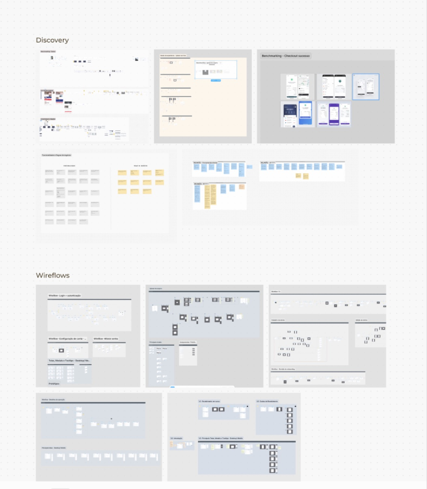
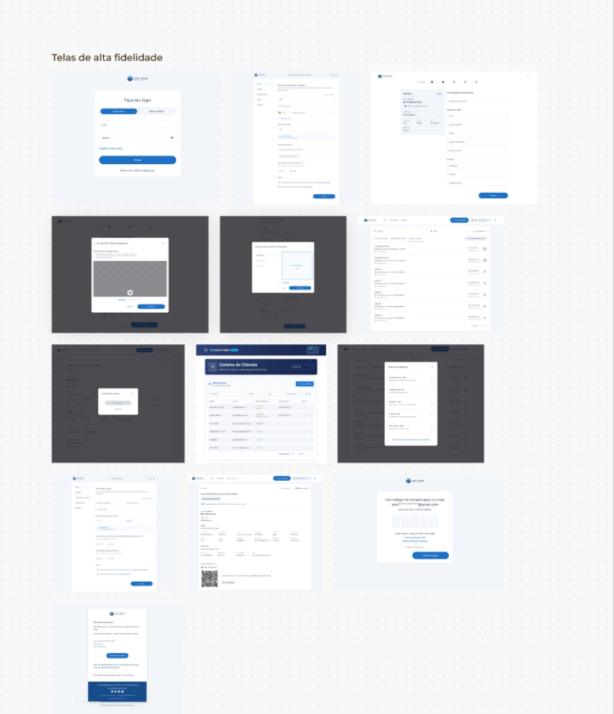

Sistema de Câmbio Digital (SaaS)
A plataforma concentrava as principais interações do cliente com a corretora, incluindo onboarding PF e PJ, gestão de documentos, acompanhamento de operações de câmbio, solicitações de cartão pré-pago e câmbio turismo, além do acesso a informações em um único painel.
Atuei de ponta a ponta na evolução dessas jornadas, conduzindo discovery, UX research e alinhamentos com stakeholders para definir fluxos, regras de negócio e interfaces. As soluções foram validadas com testes de usabilidade, acompanhadas durante o desenvolvimento e evoluídas com base em dados de uso real.
*Por questões de confidencialidade, entre em contato para saber detalhes dos projetos.

Frentes conduzidas dentro do projeto:
- Redesign do onboarding digital (PF e PJ)
- Implementação de MFA no login
- Gestão de arquivos no painel do cliente (upload e organização)
- Painel de operações de câmbio
- Solicitação de cartão pré-pago (câmbio turismo)
- Solicitação de dinheiro em espécie (câmbio turismo)
- Remessa de câmbio no painel do cliente
- Painel administrativo interno
- Padronização de e-mails transacionais
- Manutenção de Design System
Discovery e wireflows

Telas de alta fidelidade

Testes de usabilidade e manutenção de Design System